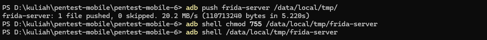
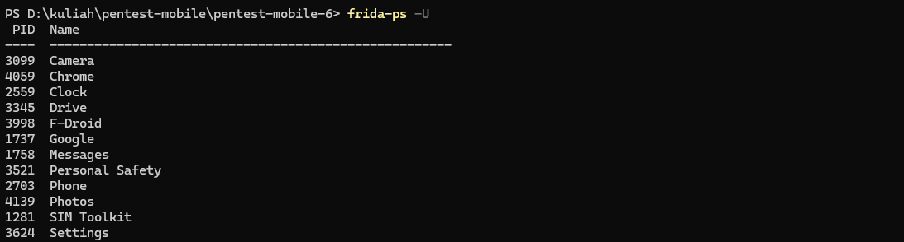
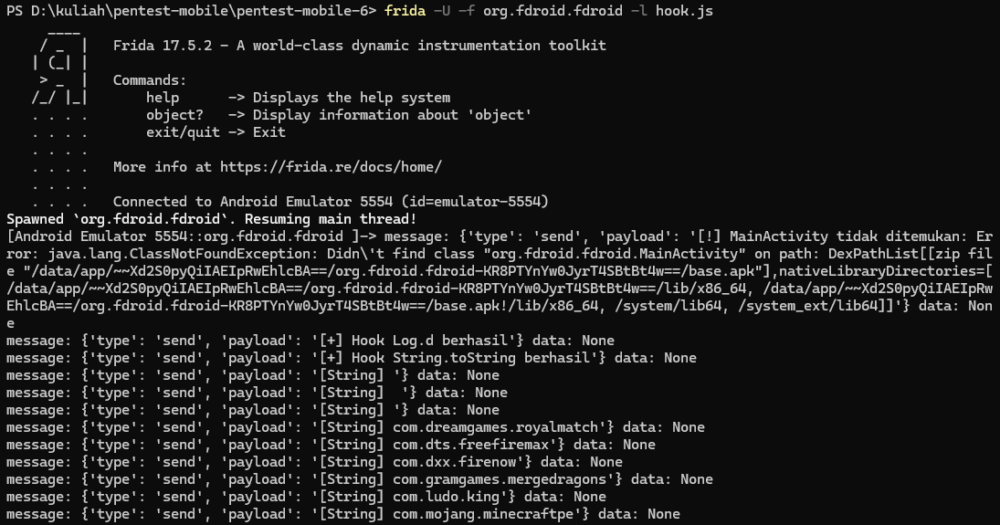
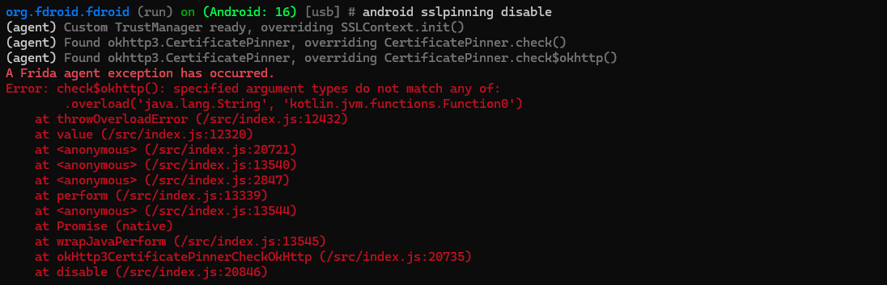
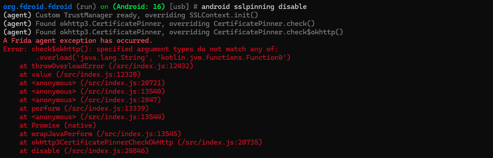
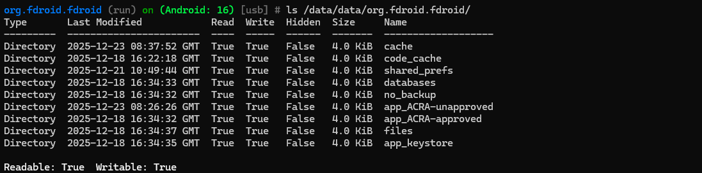
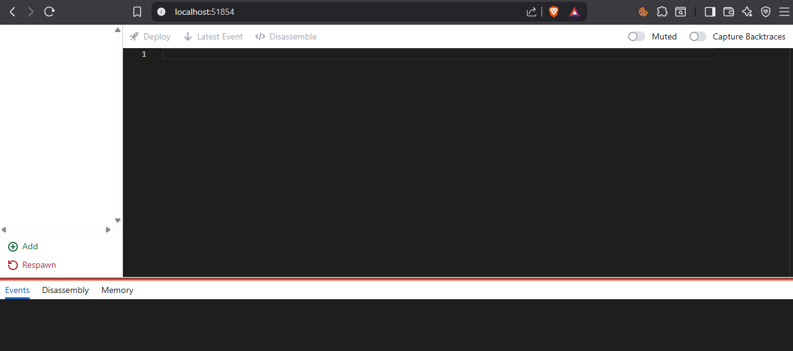

1. Pendahuluan
Dynamic analysis merupakan teknik pengujian keamanan aplikasi yang dilakukan saat aplikasi sedang berjalan (runtime). Pada pengujian ini digunakan tools Frida dan Objection untuk mengamati perilaku aplikasi Android secara langsung, seperti pemanggilan fungsi, penggunaan data sensitif, serta mekanisme keamanan yang diterapkan. Tujuan dari pengujian ini adalah untuk mengidentifikasi potensi celah keamanan yang tidak dapat ditemukan melalui analisis statis, serta memberikan rekomendasi mitigasi guna meningkatkan keamanan aplikasi.
2. Environment Pengujian
- Host OS: Windows 11 (tanpa WSL, tanpa virtual machine Linux)
- ADB Version: 1.0.41
- Frida Version: 17.5.2
- Objection Version: 1.12.2
- Target: Android Emulator (rooted)
3. Persiapan Awal
3.1 Menjalankan Frida Server
Disesuaikan dengan ABI emulator lalu di-push ke device:
Instalasi Frida Server

Verifikasi koneksi Frida untuk memastikan frida-server aktif dan device terdeteksi.

3.2 Hooking Method Java (Custom Script)
Hooking dilakukan untuk menangkap nilai sensitif saat runtime.
Jalankan dengan perintah.

3.3 Tracing Runtime Call
Tracing digunakan untuk memantau pemanggilan method secara otomatis.

Meskipun tidak ditemukan fungsi yang cocok dengan filter tracing, keberhasilan memulai sesi frida-trace menunjukkan bahwa aplikasi dapat dijalankan dalam mode dynamic analysis. Hasil 0 functions mencerminkan kemungkinan penerapan obfuscation dan desain internal aplikasi yang lebih kompleks.
3.4 Eksplorasi Runtime Menggunakan Objection
Objection digunakan untuk eksplorasi cepat tanpa scripting manual.
 

Perintah android sslpinning disable pada Objection berhasil dijalankan hingga tahap deteksi mekanisme keamanan, ditunjukkan dengan keberhasilan Frida agent terhubung ke aplikasi serta terdeteksinya SSL Pinning berbasis OkHttp3 dan inisialisasi override terhadap SSLContext dan CertificatePinner. Namun, proses bypass tidak dapat diselesaikan karena terjadi ketidakcocokan signature method check$okhttp(), yang disebabkan oleh perbedaan overload parameter pada implementasi OkHttp berbasis Kotlin. Kondisi ini menunjukkan bahwa aplikasi menggunakan mekanisme SSL Pinning modern yang tidak dapat dibypass secara otomatis dengan script bawaan Objection, sekaligus menandakan tingkat ketahanan aplikasi yang lebih baik terhadap serangan dynamic instrumentation.

Perintah ls /data/data/org.fdroid.fdroid/ menunjukkan bahwa melalui Objection, direktori internal aplikasi F-Droid dapat diakses dan dibaca dengan hak baca dan tulis. Struktur direktori yang terlihat seperti shared_prefs, databases, files, dan app_keystore menandakan lokasi penyimpanan data penting aplikasi, termasuk preferensi pengguna, database internal, dan penyimpanan kunci. Hasil ini membuktikan bahwa pada kondisi perangkat yang telah terinstrumentasi, data internal aplikasi dapat dieksplorasi saat runtime, sehingga berpotensi menimbulkan risiko kebocoran data apabila aplikasi tidak menerapkan proteksi tambahan seperti enkripsi dan pembatasan akses yang kuat.
4. Hasil & Temuan
Temuan 1 – Hooking Method Aplikasi
Percobaan hooking dan spawning aplikasi menggunakan Frida berhasil dijalankan tanpa error Failed to spawn. Aplikasi dapat dijalankan menggunakan Frida, namun tidak ditemukan method Java yang sesuai dengan filter hooking yang digunakan. Hal ini ditunjukkan dari hasil tracing yang tidak menampilkan fungsi yang ter-hook, yang mengindikasikan bahwa aplikasi kemungkinan telah menerapkan obfuscation atau tidak menggunakan pola method getter sederhana pada runtime.
Bukti: screenshot terminal Started tracing 0 functions.
Temuan 2 – Tracing Runtime Call (frida-trace)
Tracing runtime call dilakukan menggunakan perintah frida-trace dengan filter java.*get.*. Proses tracing berhasil dijalankan dan Web UI frida-trace aktif, namun hasil tracing menunjukkan 0 fungsi yang berhasil ditelusuri. Kondisi ini menunjukkan bahwa tidak terdapat method yang cocok dengan filter atau method tersebut tidak terpanggil selama proses runtime aplikasi berlangsung.
Bukti: screenshot output Web UI.

Temuan 3 – Objection Runtime Action (SSL Pinning)
Eksplorasi runtime menggunakan Objection berhasil terhubung ke aplikasi. Saat perintah android sslpinning disable dijalankan, mekanisme SSL Pinning berbasis OkHttp3 berhasil terdeteksi. Namun, proses bypass gagal diselesaikan karena ketidakcocokan signature method check$okhttp(), yang menunjukkan penggunaan implementasi OkHttp modern berbasis Kotlin.
Bukti: screenshot log Objection.
Temuan 4 – Akses Filesystem Aplikasi
Melalui Objection, direktori internal aplikasi /data/data/org.fdroid.fdroid/ berhasil diakses dan memiliki hak baca dan tulis. Terlihat direktori penting seperti shared_prefs, databases, files, dan app_keystore, yang berpotensi menyimpan data sensitif aplikasi.
Bukti: screenshot hasil perintah ls /data/data/org.fdroid.fdroid/.
5. Analisis Hasil
Analisis Risiko
Hasil pengujian menunjukkan bahwa meskipun tidak ditemukan method yang dapat di-hook secara langsung, aplikasi tetap dapat dijalankan dalam mode dynamic analysis dan filesystem internal dapat diakses pada kondisi tertentu. Akses ini berpotensi menyebabkan kebocoran data sensitif jika perangkat dalam kondisi terkompromi, sementara kegagalan bypass SSL pinning tetap perlu diwaspadai pada environment atau versi aplikasi yang berbeda.
Rekomendasi Mitigasi
1. Terapkan runtime integrity check dan deteksi Frida/Objection
2. Gunakan obfuscation menyeluruh (ProGuard/R8)
3. Pertahankan SSL Pinning modern berbasis OkHttp/Kotlin
4. Deteksi root dan emulator secara konsisten
5. Simpan data sensitif menggunakan Android Keystore dan enkripsi
6. Kesimpulan
Pengujian dynamic analysis terhadap aplikasi F-Droid menggunakan Frida, frida-trace, dan Objection menunjukkan bahwa aplikasi dapat dijalankan dalam lingkungan instrumentasi, namun tidak seluruh teknik dapat diterapkan secara efektif. Proses hooking dan tracing berhasil dijalankan tanpa error spawn, tetapi tidak ditemukan method yang dapat di-hook atau ditelusuri, yang mengindikasikan penerapan obfuscation dan arsitektur aplikasi yang kompleks. Eksplorasi runtime menggunakan Objection berhasil mendeteksi mekanisme SSL Pinning berbasis OkHttp3 meskipun bypass tidak dapat diselesaikan, serta menunjukkan bahwa filesystem internal aplikasi dapat diakses pada kondisi tertentu. Secara keseluruhan, hasil ini menunjukkan bahwa aplikasi memiliki tingkat ketahanan yang cukup baik terhadap dynamic instrumentation standar, namun tetap memerlukan mitigasi tambahan untuk meminimalkan risiko kebocoran data dan penyalahgunaan pada lingkungan yang terkompromi.